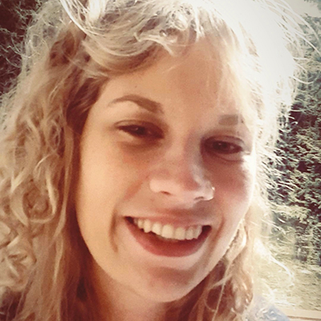

Singer-Songwriterin, bekannt unter dem Namen Miss Tea
BA Kulturpädagogik, Abschluss 2017, Bachelorarbeit zum Thema "Schweigen"
2017 Koordinatorin "Nachbarschaft Samtweberei"
Beginnt 2018 Ausbildung zur Schreinerin
Lebt seit 2019 in Schleswig-Holstein und arbeitet dort bei "Bogensport Hegger - Intutives Bogenschießen", sowie in der ambulanten Kinder- und Jugendpflege
Svenja Schreiber

*1990 in Tönisvorst bei Krefeld
Freiwilliges ökologisches Jahr 2008/09
Gestaltungstechnische Assistentin, Fachbereich Grafik- und Objektdesign
Kunst- und Musikprojekte im Jugendzentrum "Spiedie" in Krefeld
BA Kulturpädagogik, Abschluss 2017, Bachelorarbeit zum Thema "Festkultur"
Bis 2022 stellvertretende Leitung der Jugendfreizeitstätte der "Bürgerinitiative Rund um St. Josef e.V."